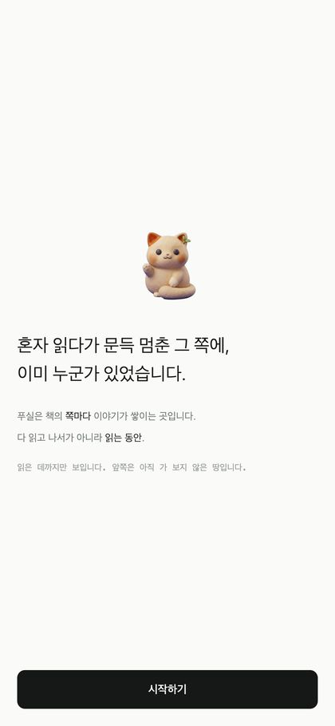
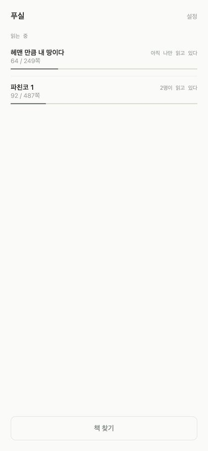
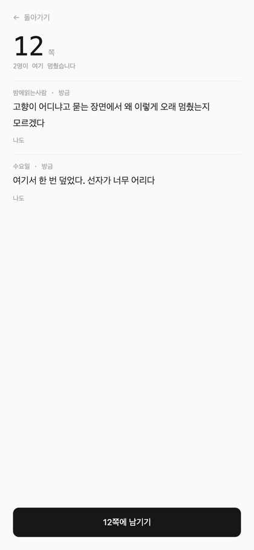
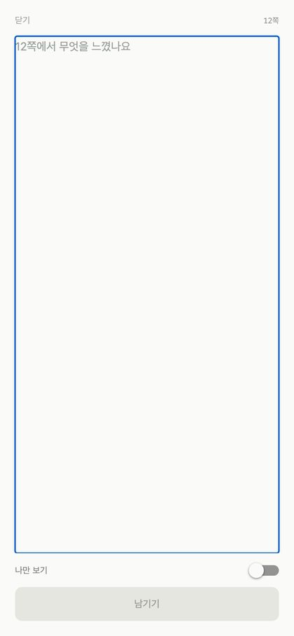

31쪽밤에읽는사람 · 3일 전
고향이 어디냐고 묻는 장면에서 왜 이렇게 오래 멈췄는지 모르겠다.
나도 · 4명도
푸실
굿리즈도 왓챠피디아도 다 읽은 뒤를 다룹니다. 별점을 매기고, 감상을 올리고, 읽은 권수를 셉니다. 그런데 읽는 중이 통째로 비어 있습니다.
푸실은 책 한 권을 한 쪽당 한 줄로 펼칩니다. 왼쪽에화면 위에 있는 그 줄이 책 한 권이고, 지금 이 글을 읽어 내려가는 만큼이 당신의 진도입니다. 내려갈수록 지나온 쪽에 색이 오르고, 아직 안 간 아래쪽은 회색으로 남습니다.
고향이 어디냐고 묻는 장면에서 왜 이렇게 오래 멈췄는지 모르겠다.
나도 · 4명도
스레드가 많은 쪽을 높게 그리면 그건 막대그래프입니다. 처음에 그렇게 그렸다가 버렸습니다. 높이를 고르게 두고 색을 시간에 걸자 바가 살아났습니다. 방금 누가 다녀간 쪽은 따뜻하고, 아무도 안 온 지 오래된 쪽은 식어 있습니다.
여기서 한 번 덮었다. 선자가 너무 어리다.
나도 · 11명도
인기순 정렬이 없습니다. 정렬은 쪽 순서 하나뿐입니다. 좋아요로 줄을 세우는 순간 혼자 읽다가 문득이 잘 쓴 감상으로 변합니다. 그래서 「나도」는 있지만 그 수로 아무것도 정렬하지 않습니다.
지하철에서 읽다가 울 뻔했다. 아무한테도 말 못 하고 내렸다.
나도 · 2명도
탭으로는 못 고릅니다 — 손가락 하나에 48쪽이 잡히니까요. 그런데 누르고 끌면 확정이 손을 뗄 때로 미뤄지고, 그 사이 쪽 번호가 계속 보입니다. 48쪽 오차가 고칠 수 있는 오차가 됩니다. 앱에서는 손가락을 아래로 내릴수록 배율이 줄어 1200쪽 책에서도 한 쪽을 집습니다.




아래 둘은 그린 것입니다 — 바코드의 온도를 보여주려면 그래야 합니다. 위 넷은 실제 화면입니다.
← 서재
파친코 1
이민진
혼자가 아니라는 것과 내가 어디쯤인지. 여기에 다른 걸 더하지 않습니다 — 읽다 말고 드는 화면이라 읽을 거리가 많으면 안 됩니다.
다 읽으면 나오는 영수증. 1쪽부터 내가 남긴 글이 쪽 순으로 섭니다. 실제로 만들어진 것 보기 →
좌표를 쪽이 아니라 진도로 저장합니다. 그래서 487쪽 판에 남긴 50쪽 글이, 520쪽 판을 든 사람에게는 53쪽으로 보입니다. 번역도 출판사도 달라도 사람은 흩어지지 않습니다.
이 문장 때문에 페이지를 접었다.
나도 · 7명도
아직 안 간 쪽은 내용이 하나도 안 보입니다. 대신 불빛은 보입니다 — 저 앞 어딘가에 몇 명이 멈춰 있다는 것만. 막는 장치가 아니라 끌어당기는 장치입니다. 빈 땅이 사람을 움직입니다.
검색은 전부 되지만 커뮤니티는 개척된 책만 열립니다. 처음 여는 사람이 판본과 마지막 쪽을 등록하고 이 책을 연 사람으로 남습니다. 글을 잘 써서가 아니라 먼저 왔기 때문입니다.
다 읽으면 영수증이 나옵니다. 읽은 날수, 멈춘 곳, 1쪽부터 내가 남긴 글. 이 앱에서 밖으로 나가는 유일한 물건입니다.

푸실은 풀(우거진 풀)과 실(마을)이 붙은 옛 지명입니다. 아무도 열지 않은 책이 곧 풀만 우거진 땅이고, 처음 온 사람이 길을 냅니다. 실이는 그 풀밭에 원래 앉아 있던 고양이입니다.
App Store 에 올라왔습니다. iPhone, iOS 16.4 부터. 무료입니다.
App Store 에서 받기